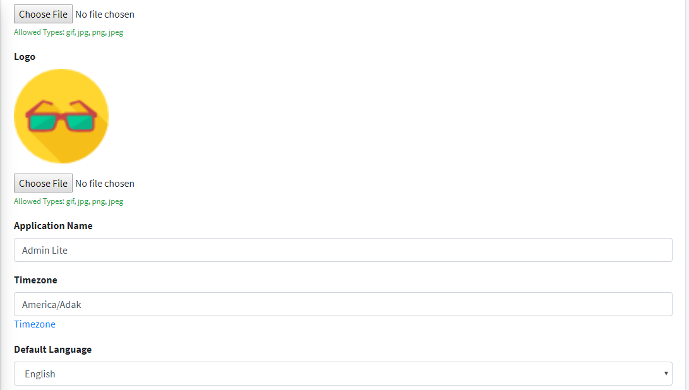
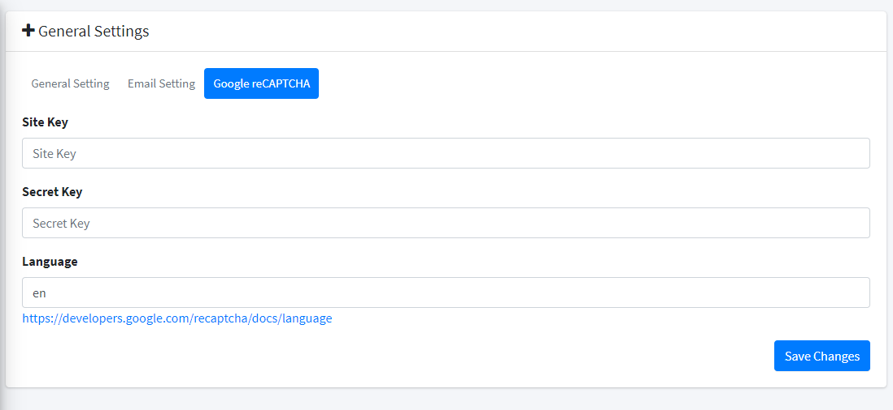
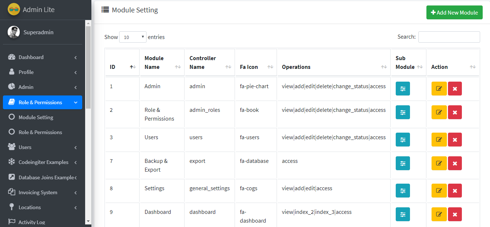
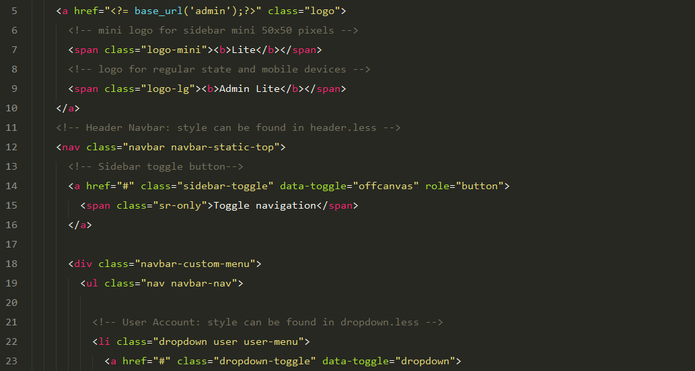
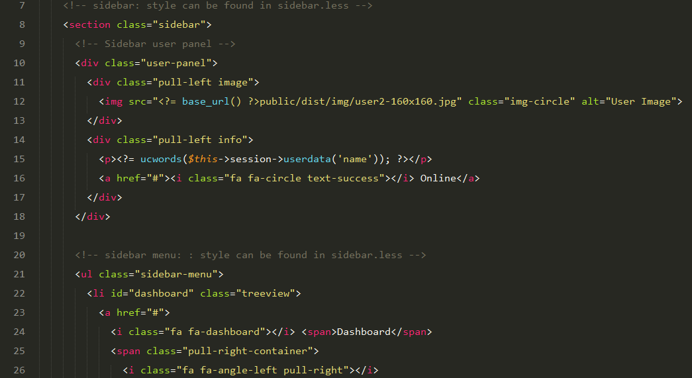
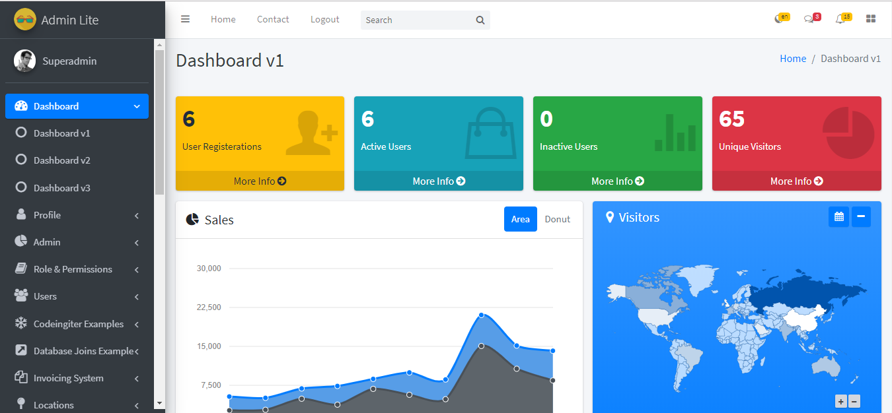
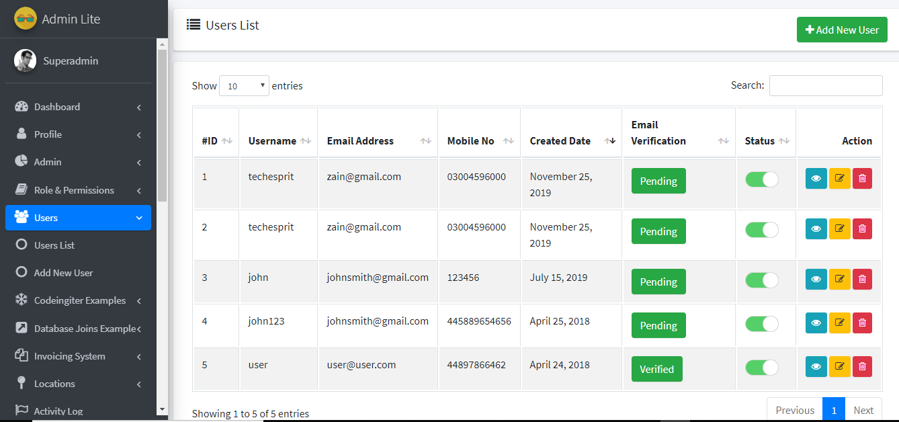
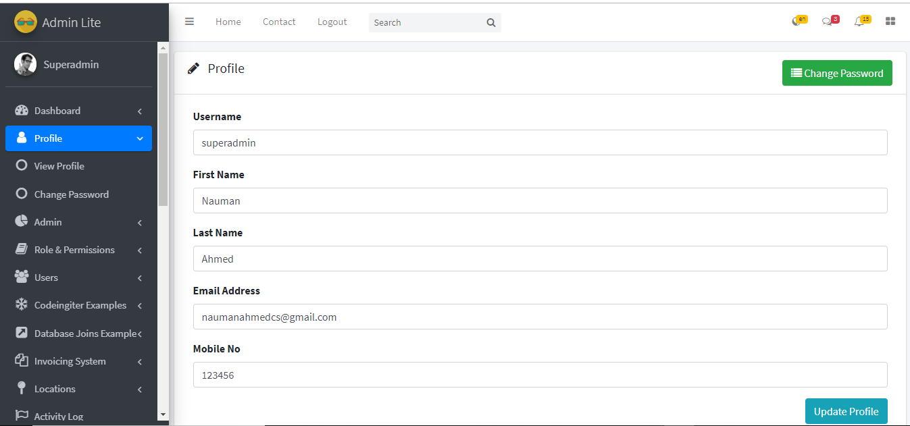
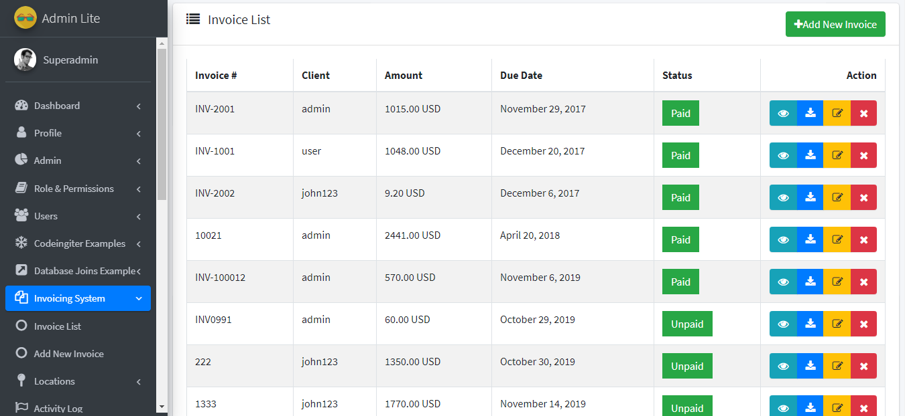
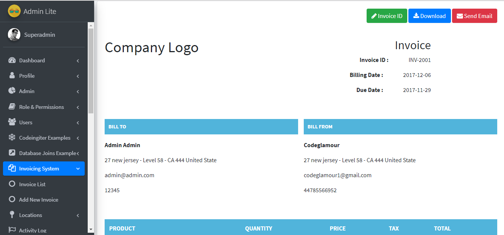

Admin Lite Guide
- Created: December 15, 2017
- Updated: January 20, 2020
- By: CodeGlamour
- Email: geeksourcecodes@gmail.com
We would like to thank you for purchasing this script! We are very pleased you have chosen our script for your project, you will not be disappointed! Before you get started, please be sure to always check out these documentation files. We outline all kinds of good information, and provide you with all the details you need to use.If you have any questions that are beyond the scope of this help file, please feel free to contact us on codeglamour1@gmail.com
Note: Customizing code and other design related work can be done as freelance work on a $20-30 hourly rate only with Paypal and/or Payoneer.
System Requirements
To installing Admin Lite Integration with Codeigniter, Your web server must be running PHP 5.6 or higher, and Mysql 5 or higher. Below are a list of items you should ensure your host can comply with.
- PHP 7
- PHP 5.6+
- MYSQLi 5.1+
- Mcrypt Extension
- MBString Extension
- MYSQLi Extension
- CURL Extension (recommended)
*In most hosting accounts these extensions are enabled by default. But you should check with your hosting provider.
Overview
ADMIN LITE is powerfull Codeigniter Admin Panel for starting a new project with Codeigniter Framework. It is developed for custom codeigniter projects. It’s cover most common features that needed for nowadays project. It will make your development task more easier then before. We are working hard to create many premium features on this project
The main objective is to speed up web development effort by providing configurable and ready modules. Configurations can be made easily using the Control Panel, or programmatically. Use Admin Lite Admin Panel’ to create your own web application with the following benefits:
- Speed up web development by using ready modules
- Make changes quickly and easily using control panel
- Source code available for further modifications
Install Quickstart
Configure Database Connection
You need to have previously setup database from the cPanel.
Here is a good tutorial how to setup MySQL database in cPanel if you are not familiar with this.
- Login to cPanel by accessing www.yourdomain.com/cpanel and navigate go MySQL Databases.
- Create database first.
- Create user and setup your password.
- Add the user to database by selecting the database and the username.
- Open the file adminlite_db.sql in database folder of package files and Import the Database. It will create all required database tables and sample content.
Make sure you have checked All privileged when adding the user to database.
Setup Base URL
Note: You dont need to add your base url, System will takes automatically. In some case you want to add please follow the lines below.
Go to application/config/config.php and setup $config['base_url'] where Admin Lite will be installed.You need to add your base url to this line:
$config['base_url'] = '';
Ex. If you are installing on subdomain you will set http://www.adminlite.domain.com/
Ex. If you are installing on subfolder you will set http://www.domain.com/adminlite/
Ex. If you are installing on the main domain you need to set just http://www.domain.com/
$config['base_url'] = 'http://www.domain.com/adminlite/';
NOTE:The url must ends with slash (/)
Site Configuration
Change Database Settings
Open your site main root folder then open: application/config/database.php Change your database name, username and password here,

General Setting
You can change your site setting in "www.domain.com/admin/general_settings/" link.

Change Email Setting
Change the SMTP Username and Password in "domain.com/admin/general_settings/" link.
Note: You need to use a valid domain email address. And Email will work only on live server not on localhost.
Google Recaptcha Setting
After login to admin panel click on the Setting tab in the left menu and then click on the recaptch settign. Here you can add your Site & Secrit Key
Add Module Setting
If you want to add extra modules in the adminpanel you have to follow the following fields
1. The controller name fields must be your controller name and the Operatins files must be your Functions or Method names.
2. If you want to access the follwoing controller please call this function in your constructon mentod $this->rbac->check_module_access(); For more detail please open the users.php file in controller directory.
3. For the operation permission write $this->rbac->check_operation_access(); in your function source code. For more detail please open the users.php file in controller directory.

Third Party Libraries
mPDF (For PDF Generation)
mPDF is a PHP library which generates PDF files from UTF-8 encoded HTML. It is based on FPDF and HTML2FPDF (see CREDITS), with a number of enhancements. mPDF was written by Ian Back and is released under the GNU GPL v2 licence.
mPDF 7.0 requires PHP ^5.6 || ~7.0.0 || ~7.1.0 || ~7.2.0. PHP mbstring and gd extensions have to be loaded.
* For more information visit this link https://github.com/phpclicks/mpdf
Customization
Header Adjustment
Go to the site folder adminlite and open file application\views\admin\include\navbar.php. Here you can set logo, naviation and Account Buttons.
Sidebar Adjustment
Go to the site folder adminlite and open file application\views\admin\include\sidebar.php. Here you can add/remove/edit the main-menu and dropdown-menu
Routes File
If you want to change the Route file go to adminlite/application/config/route.php here you can change the route according to your requirements
My Controller File
If you want to change the MY Controller file go to adminlite/application/core/MY_Controller.php and edit it according to your needs.
Admin Section
The administrator module having all privileges about this entire project.
Admin URL / Access
yoursitename.com/adminlite
Username: superadmin
Password: 12345
1. This is the main Dashboard overview. you can see all your information about the user.
2. To see and change your user profile and you can add , edit and delete the user from this option.
3. To see and change your admin profile and password you can update the admin profile from this option.
4. To see and change your invoices you can add, edit and delete the invoice the from this option.
4. You can view the Invoice form this option and can also download the invoice in pdf formate and can also send email through attachment.
Changelogs
Version v1.6 (20 January 2020)
- Fixed - File Upload 404 Error
- Fixed - DB Prefix
- Fixed - Dashboard Access Error
- Fixed - Users Status Sort Error
- Fixed - Small Bugs
Version v1.5 (2 December 2019)
- Updated to latest verison 3.1.10
- Added - Multilanguage
- Added - Dynamic Admin Side Menu
- Added - Custom Email Templates
- Added - Multiple file upload example
- Added - User Activity Log
- Added - Dynamic Graph
- Added - Dynamic Modules
- Added - Country, State, City example
- Added - General Settings, Email Setting, Recaptch Setting
- Added - Language Setting
- Fixed - Small Bugs
Version v1.3
- Improve Design
- Added User Roles
- Added User Permission
- Added advanced search in Admin List
- Ajaxbased active inactive users
Version v1.2
- Fixed Small Bugs
Support
For any query or problem feel free to contact us on Email: geeksourcecodes@gmail.com